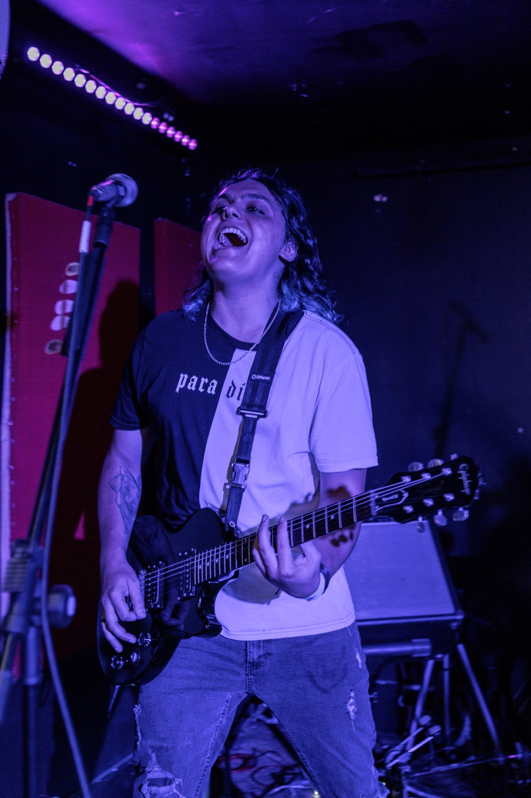
Endy
Guitarra BaseBio em breve. 🤘
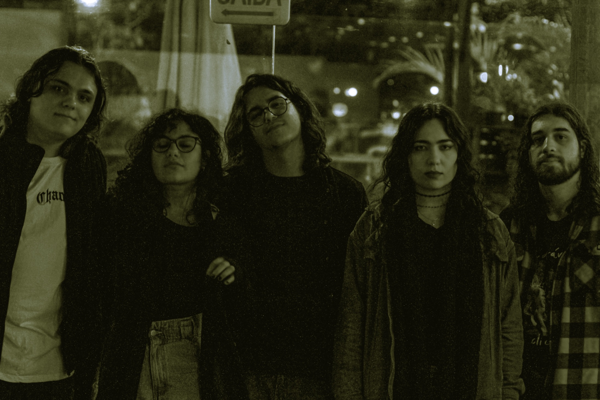
↓A Piteira é o seu tributo a Pitty em Florianópolis — uma banda formada por amantes do rock nacional para reviver, ao vivo e com intensidade, os hinos de uma das maiores vozes do rock brasileiro.
Pitty é referência absoluta do rock nacional: de Admirável Chip Novo a Equalize e Teto de Vidro, são músicas que marcaram gerações. A Piteira leva essa energia para o palco com um show que faz todo mundo cantar junto do começo ao fim.

Bio em breve. 🤘
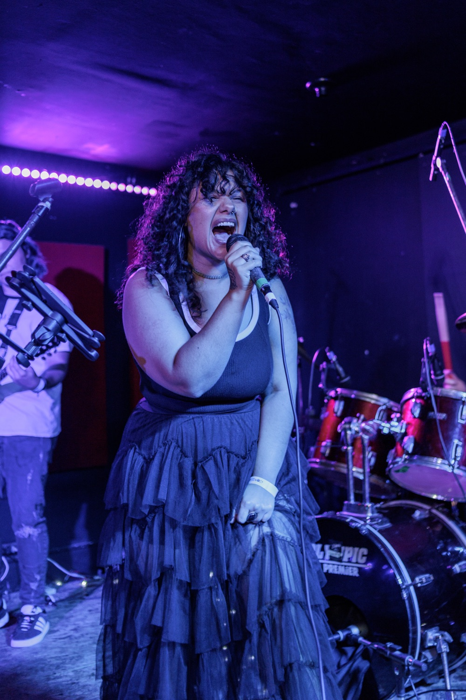
No vocal, a cacheada que desbrava a voz em diversos nichos musicais, chega com a Piteira pra cantar com o público e encher de emoção!
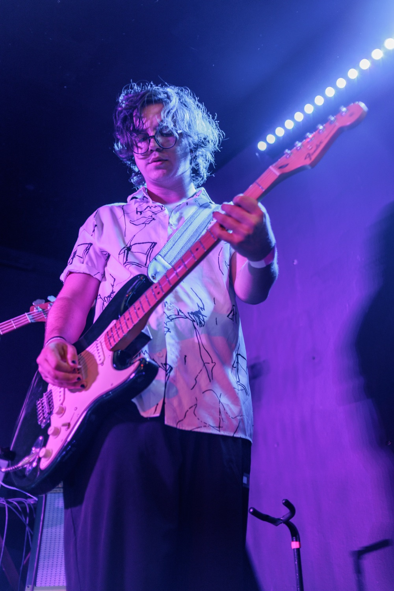
Bio em breve. 🤘
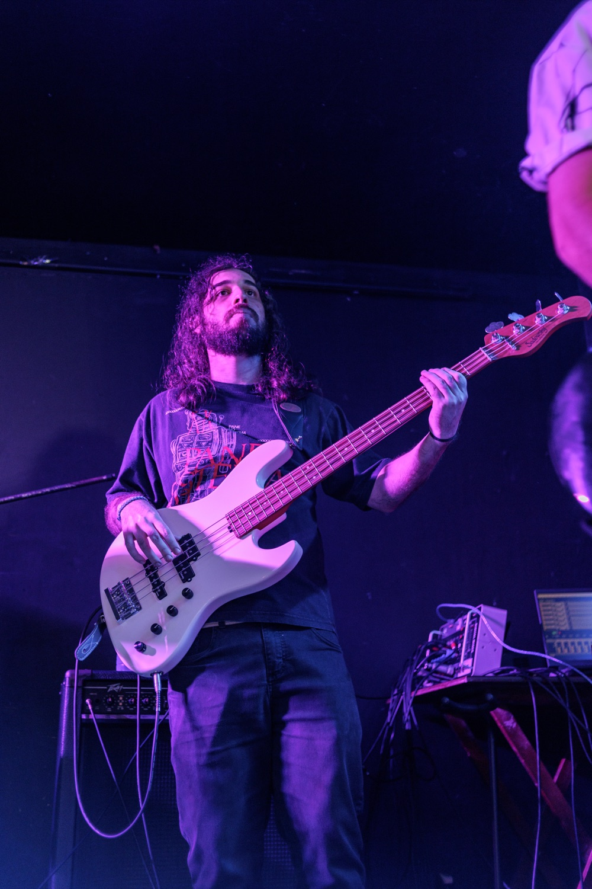
Bio em breve. 🤘
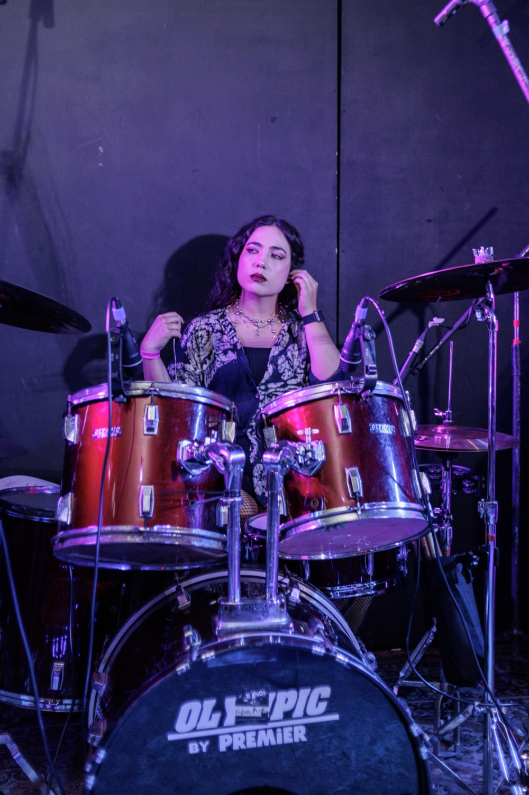
Bio em breve. 🤘
Fotos: @manufaverofoto
Um set de Pitty pra gritar junto — dos hinos pesados de Admirável Chip Novo aos clássicos que tocaram em todas as rádios do rock nacional.
🎧 Playlist da Piteira no Spotify em breve.
No palco com Loud Fest, Bar do Castelo (Porto Belo) e Haoma — a energia de Pitty ao vivo, disponível para contratação.
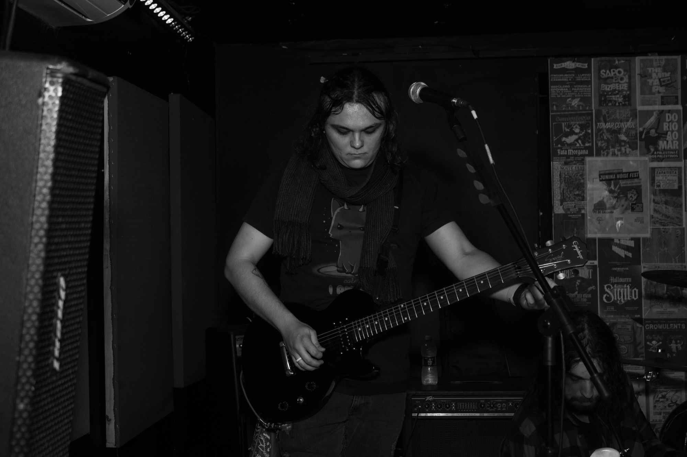
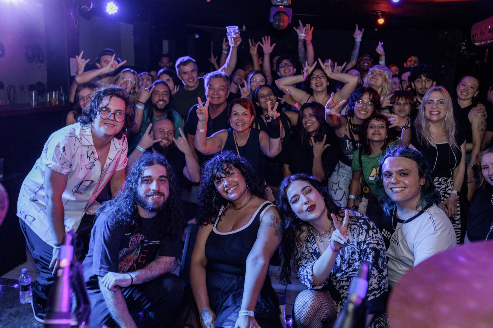
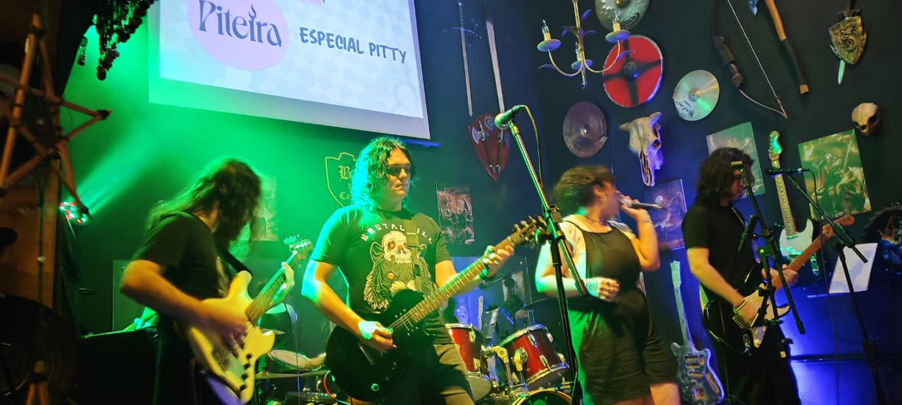
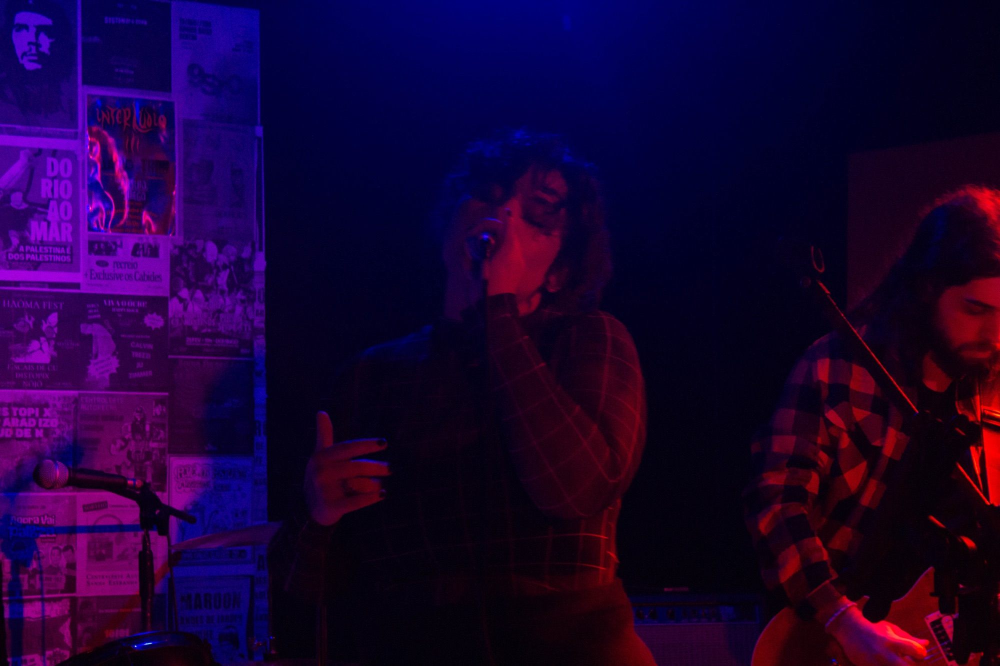
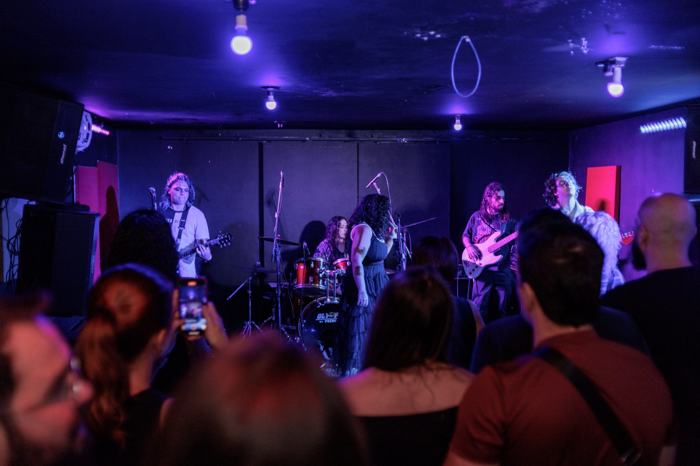
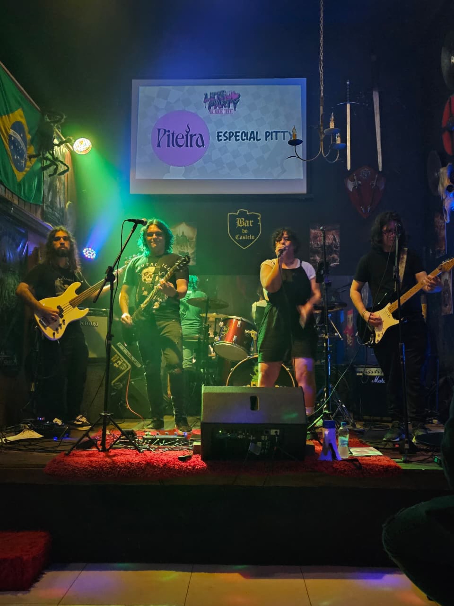
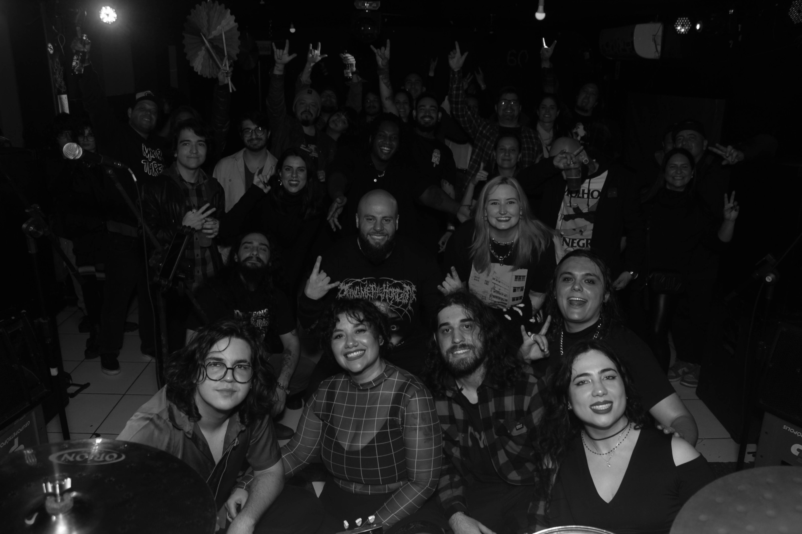
Banda de 5 integrantes. Mapa de palco e input list abaixo; também rodamos em formato compacto (tudo em linha / DI) quando o palco pede.

| # | Fonte | Microfone / captação |
|---|---|---|
| 1 | Vocal (Fernanda) | Mic dinâmico c/ pedestal |
| 2 | Guitarra Solo (Gabriel) | DI e/ou mic no amplificador |
| 3 | Guitarra Base (Endy) | DI e/ou mic no amplificador |
| 4 | Baixo (Lucas) | DI e/ou saída de linha |
| 5 | Bumbo | Mic dinâmico interno |
| 6 | Caixa | Mic dinâmico |
| 7 | Tons / Surdo | Mics de tom |
| 8 | Overheads (pratos) | Condensadores (par) |
⚡ MODO SEM AMPLIFICADOR
Podemos rodar guitarras e baixo direto na mesa (DI), com tudo em linha — ideal para palcos menores ou monitoração via in-ear.